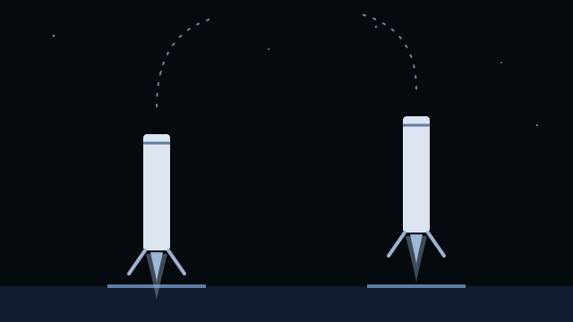
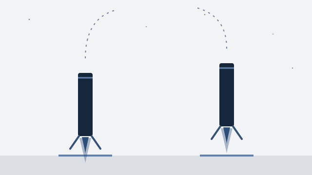

Video fra SpaceX · 2018
Den første flyvning med Falcon Heavy
Se den første flyvning med Falcon Heavy fra 2018.
Se videoen på YouTube (åbner i nyt vindue)Et af de … temaer i NewDeal Invest
Er produktet en opsendelse, en forbindelse eller data?
En opsendelse er én forretning. Satellitforbindelser og billeder af Jorden er andre. Følg de tre retninger i kortet, og gå videre til selskaberne bag dem.

… %
af PMINDI er placeret i temaet Rumfart.
Andele i PMINDI, den udgave af fonden, der udbetaler udbytte, pr. … (fondens data).
De … temaer efter størrelse. Rumfart er nr. ….
Det har vi skrevet
Ordret uddrag af NewDeal Invests egne ugebreve og indlæg om temaet, med dato og link til hele teksten. Det er ikke en anbefaling.
Læs hele teksten på bloggen (åbner i nyt vindue)»Musk har gjort noget fundamentalt: han har dramatisk reduceret omkostningen ved at sende ting ud i rummet. Og når transportomkostninger kollapser, opstår der helt nye markeder.«
Tryk på et selskab for at se mere om det.
Rumfart
Tegningen viser tre retninger. Jo tykkere en pil er, jo mere fylder den i fonden. Tryk på en gruppe for at se selskaberne.
Det, der skal op
En raket bringer satellitter og udstyr op i kredsløb om Jorden. Rocket Lab og Firefly står også på FAA's liste. Firefly landede i 2025 et fartøj på Månen. Starfighters Space flyver i dag med F-104, jagerfly, der kan flyve hurtigere end lyden, for kunder, der har brug for den slags flyvninger. Selskabet skriver i sit prospekt, at det senere vil sende raketter op fra fly. Det gør det ikke i dag.
Tryk på et selskab for at se, hvad det laver.
En satellit består af en platform med strøm, styring og radio og det udstyr, den skal bruge. Selskaberne bygger satellitter og dele til dem.
Tryk på et selskab for at se, hvad det laver.
Udstyr og systemer til rumfartøjer, både til forskning og forsvar.
Tryk på et selskab for at se, hvad det laver.
Dele til raketter, satellitter og fly. Om materialerne kan du læse på siden Råstoffer.
Tryk på et selskab for at se, hvad det laver.
Det, der kommer ned igen
Satellitter tager billeder og opfanger signaler fra Jorden. Planet Labs skriver, at dets satellitter fotograferer Jordens landområder hver dag. HawkEye 360 opfanger radiosignaler for forsvaret i USA og i lande, som USA samarbejder med om forsvar.
Tryk på et selskab for at se, hvad det laver.
Satellitter sender tale og data til steder, hvor der ikke er mobilmaster. AST SpaceMobile bygger et mobilnet i rummet, som almindelige telefoner kan bruge direkte. Om net og datacentre på Jorden kan du læse på siden Datacentre.
Tryk på et selskab for at se, hvad det laver.
Det, der rækker længere ud
Intuitive Machines bygger fartøjer, der lander på Månen, og har sendt dem dertil for NASA. Selskabet arbejder også med udstyr og tjenester til aktivitet i rummet ud over Jorden. Det ejer desuden en virksomhed, der bygger kommunikationssatellitter.
Tryk på et selskab for at se, hvad det laver.
Op og ned
SpaceX blev grundlagt i 2002. Selskabet har tre dele: rumfart med raketterne Falcon og Starship og rumkapslen Dragon, forbindelse via Starlink og en AI-del. Det står i selskabets prospekt fra juni 2026. Et prospekt er et dokument med fakta om selskabet til nye investorer.
AI-delen kom til, da SpaceX overtog selskabet xAI i februar 2026. Tallene for 2025 er regnet, som om xAI og det sociale medie X havde hørt til SpaceX hele året. SpaceX laver derfor også noget, der hører til temaet Datacentre. I fondens opdeling tælles selskabet kun med her.

Beløb i mio. USD fra SpaceX’ prospekt (åbner i nyt vindue) og Rocket Labs årsrapport (åbner i nyt vindue)Danmarks Statistik (åbner i nyt vindue).
Naboerne
Disse to selskaber hører først og fremmest til et andet tema, men laver også noget til rumfart. De tælles med under deres eget hovedtema, ikke her.
SpaceX laver også noget, der hører til temaet Datacentre. I fondens opdeling tælles selskabet kun med her.
Set udefra
Her er udvalgte opslag og videoer fra medier, rumorganisationer og selskaber. De er ikke fondens holdning.
Se efter: Skeln mellem opsendelsen og den tjeneste, der bagefter leveres fra rummet.
Se efter: Skeln mellem opsendelsen og den tjeneste, der bagefter leveres fra rummet.
Rocket Lab @RocketLab · på engelsk
Selskabets eget opslag Kort fortalt Rocket Lab oplyser, at selskabets raket Electron har sat alle tre HAWK-satellitter til kunden HawkEye 360 i kredsløb.
Hvad skal du lægge mærke til? Læs opslaget sammen med afsnittet om op · opsendelse. Skeln mellem opsendelsen og den tjeneste, der bagefter leveres fra rummet.
NASASpaceflight @NASASpaceflight · rumfartsmedie · på engelsk
Hvad skal du lægge mærke til? Læs opslaget sammen med afsnittet om op · opsendelse. Skeln mellem opsendelsen og den tjeneste, der bagefter leveres fra rummet.
The Wall Street Journal @WSJ · på engelsk
Kort fortalt Politikere fra begge partier i den amerikanske Kongres kræver en undersøgelse af Elon Musk, efter at The Wall Street Journal har beskrevet, at SpaceX-chefen begrænsede Ukraines adgang til Starlink.
Hvad skal du lægge mærke til? Læs opslaget sammen med afsnittet om spacex under opsendelse. Skeln mellem opsendelsen og den tjeneste, der bagefter leveres fra rummet.
Reuters @Reuters · på engelsk
Kort fortalt Ifølge Reuters har Japan sendt et ubemandet rumfartøj af sted mod Mars-månen Phobos. Reuters skriver, at missionen har til formål at blive den første, der henter prøver fra den lille måne tilbage til Jorden.
Hvad skal du lægge mærke til? Læs opslaget sammen med afsnittet om ud. Skeln mellem opsendelsen og den tjeneste, der bagefter leveres fra rummet.
Opslagene er udvalgt af teamet bag NewDeal Invest. Afsenderne og de nævnte selskaber står ikke bag denne side, og opslagene er ikke fondens vurdering. NASASpaceflight er et uafhængigt medie og ikke NASA.
Se det selv


Video fra SpaceX · 2018
Se den første flyvning med Falcon Heavy fra 2018.
Se videoen på YouTube (åbner i nyt vindue)

Video fra SpaceX · 2022
Følg en mission, der sender 53 Starlink-satellitter op.
Se videoen på YouTube (åbner i nyt vindue)Udvalgte offentlige opslag om selskaberne i temaet. Opslagene er andres og ikke NewDeal Invests holdning.
Henter opslag …
Kilder: selskabernes egne årsrapporter og prospekter, linket ved hvert punkt.
Videre
Siden fortæller ikke om net og datacentre på Jorden, om materialerne i raketterne eller om droner og fly. Det gør andre af fondens temaer.